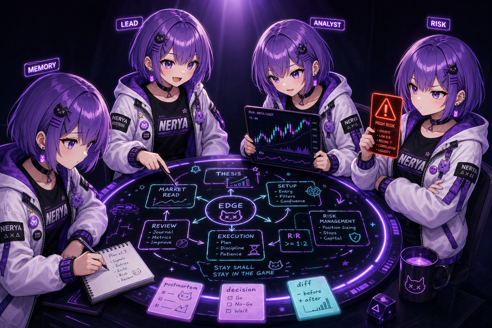

04 · ritual / agent team
A durable team, not a chain of function calls.
Lead, analyst, risk critic, scribe. Shared blackboard, task board, mailbox, gates. Every turn leaves a record. Every record feeds the next session.
- LEADplans, routes, schedules
- ANALYSTreads the chart, drafts the thesis
- RISKblocks the trade if the math is off
- MEMORYwrites mistakes into the ledger